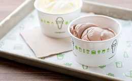

How our story begins
뉴욕에서 온 파인 캐쥬얼 레스토랑, 쉐이크쉑
쉐이크쉑은 2001년, 뉴욕 메디슨 스퀘어 공원 복구 사업을 위한 USHG*의 핫도그 카트에서 시작되었습니다. 공원 내 "I ♥ TAXI" 아트워크로 꾸며진 핫도그 카트는 매해 여름, 쉑팬들이 길게 줄 섰을 정도로 인기를 끌었습니다. 2004년, 많은 인기에 힘입어 메디슨 스퀘어 공원에 ‘SHAKE SHACK’ 이라는 간판을 걸고 시작한 것이 전 세계가 사랑하는 브랜드, 쉐이크쉑이 되었습니다.
USHG(유니언 스퀘어 호스피탈리티 그룹)* 미국 유니언스퀘어카페와 미슐랭 가이드 1스타인 그래머시태번, 더 모던 등 10여 개의 외식업체를 운영하는 글로벌 외식 기업
STAND FOR SOMETHING GOOD
세상에 필요한 사려 깊은 가치
쉐이크쉑은 신선하고 좋은 재료의 음식과 즐겁고 활기 넘치는 지역사회의 모임 공간, 그리고 게스트를 향한 따뜻한 호스피탈리티를 통해 우리의 핵심 가치인 “Stand For Something Good”을 실천합니다.
Good Ingredients
쉐이크쉑의 모든 메뉴는 좋은 식재료에서 시작됩니다.
1
쉐이크쉑의 시스니처 앵거스 비프 패티는 양질의 맛과 식감으로 버거의 맛을 완성합니다.

2
쉐이크쉑의 시스니처 앵거스 비프 패티는 양질의 맛과 식감으로 버거의 맛을 완성합니다.

3
쉐이크쉑의 시스니처 앵거스 비프 패티는 양질의 맛과 식감으로 버거의 맛을 완성합니다.

Good ‘n’ Green
쉐이크쉑의 모든 메뉴는 좋은 식재료에서 시작됩니다.
1
매장이 위치한 지역의 특성을 반영한 호딩/인테리어를 통해 지역 사회와 하나 됩니다.

2
식물 및 나무 목재를 적극적으로 활용한 친환경 그린 인테리어를 통해 도심 속의 휴식공간을 제공합니다.

3
지역 아티스트와의 협업을 통해 완성한 아트워크를 통해 지역의 정체성이 담긴 매장 인테리어를 완성합니다.

Good Neighbors
쉐이크쉑의 모든 메뉴는 좋은 식재료에서 시작됩니다.
1
쉐이크쉑을 방문하는 모든 이를 내 집에 온 손님처럼 응대하며 따뜻한 호스피탈리티를 제공합니다.

2
지속적인 기부 활동을 통해 판매 수익금의 일부를 지역사회에 환원합니다.

3
지역의 고유 브랜드와 협업하여 메뉴를 개발하고 원재료를 수급하여 지역 사회와 함께 성장합니다.